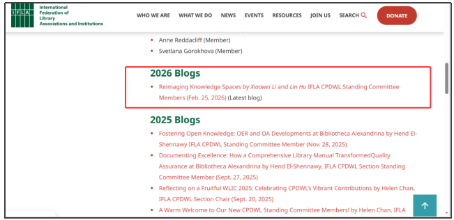

学院通知 · 竞赛比赛
国际图联CPDWL专业分会博客刊登四川大学图书馆 XR创新实践案例
发布时间：2026-02-27 23:44:08
2月25日，国际图书馆协会联合会（IFLA）所属的“持续专业发展与职场学习”（Continuing Professional Development and Workplace Learning, CPDWL）专业分会的官方博客刊载了四川大学图书馆题为《重塑知识空间：图书馆如何以XR支持跨学科共创与学习转型》的案例文章，标志着我馆在沉浸式技术与跨学科学习支持领域的创新实践首次在国际专业平台获得呈现与推介。 文章系统梳理了四川大学图书馆自2023年起围绕扩展现实（XR）技术开展的一系列探索实践，重点呈现了2025年首届“XR空间设计大赛”的组织理念与实施路径，并从技术可及性促进、跨学科协作连接、新型学习模式实验三个维度，分析了学术图书馆在数字化转型进程中如何超越传统资源提供者角色，构建以学生为主体的开放式创新平台。 作为国际图联推动全球图书馆员专业发展的重要平台，CPDWL（持续专业发展与职场学习）专业分会致力于推动全球图书馆员的职业成长、终身学习与创新实践，是国际图书馆界专业发展领域的重要交流平台。分会博客长期关注行业前沿动态与创新实践，此次四川大学图书馆案例的刊载，既是对中国高校图书馆在数字学习支持领域探索的认可，也为全球同行提供了来自中国语境下的实践样本与思考路径。 未来，我馆将持续深化与国内外图书馆界的专业交流，共同探讨XR、人工智能等新兴技术在图书馆专业发展与学习支持服务中的长期应用前景，持续探索面向未来学习的智慧图书馆建设。 IFLA CPDWL专业分会官方博客： https://www.ifla.org/cpdwl-blogs 案例文章链接： https://www.ifla.org/wp-content/uploads/Reimagining-Knowledge-Spaces.pdf
